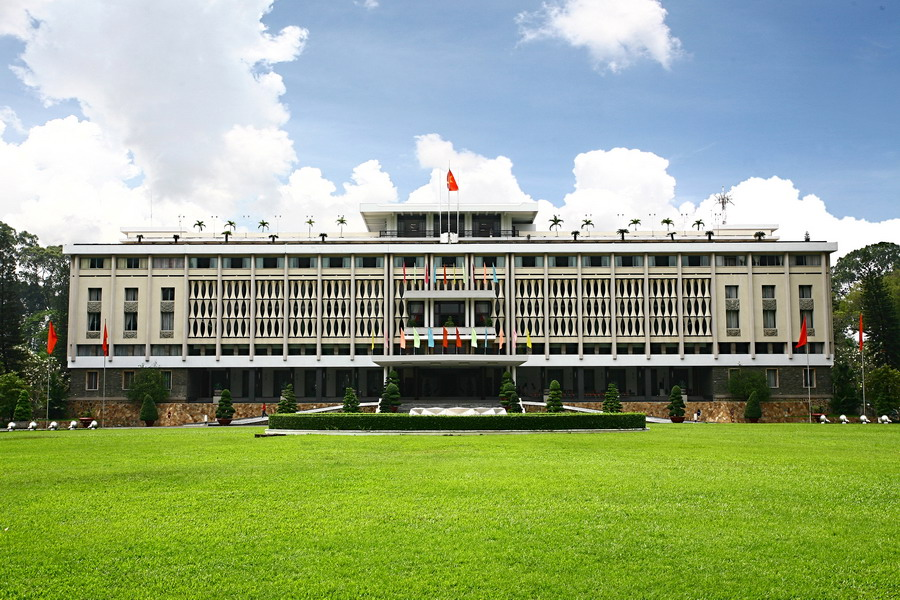
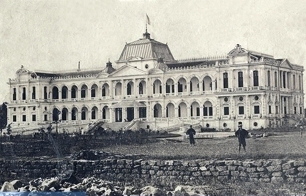
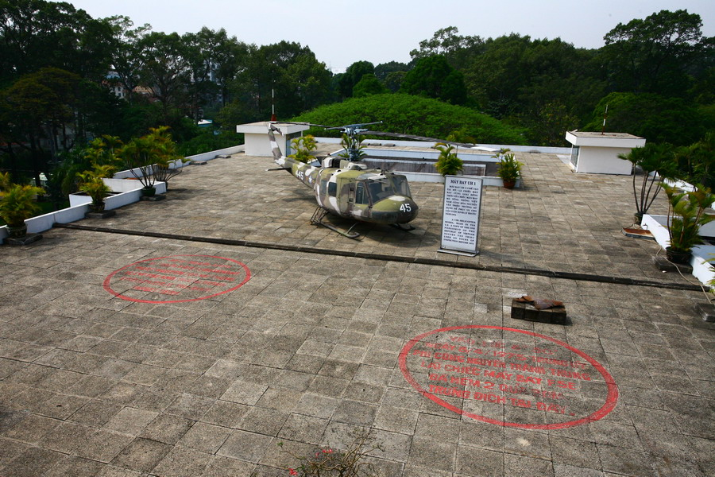

Dinh Độc Lập không chỉ là một công trình kiến trúc mà còn là biểu tượng lịch sử quan trọng của đất nước Việt Nam. Nằm ở trung tâm TP. Hồ Chí Minh, tòa Dinh này tưởng tượng những khoảnh khắc then chốt trong lịch sử đất nước, từ thời kỳ thuộc địa cho tới sự thống nhất. Bài viết này sẽ hướng dẫn bạn chi tiết về Dinh Độc Lập, bao gồm lịch sử, kiến trúc, giá vé, giờ mở cửa và những trải nghiệm không nên bỏ lỡ.

Dinh Độc Lập Ở Đâu? Địa Chỉ & Vị Trí
Dinh Độc Lập nằm tại địa chỉ 135 Nam Kỳ Khởi Nghĩa, Phường Bến Thành, Quận 1, TP.HCM, một vị trí trung tâm và dễ tiếp cận. Tòa Dinh nằm giữa công viên Tao Đàn phía đông và đường Nguyễn Huệ sầm uất phía tây.
| Thông Tin | Chi Tiết |
|---|---|
| Địa Chỉ | 135 Nam Kỳ Khởi Nghĩa, Phường Bến Thành, Quận 1, TP. Hồ Chí Minh |
| Quận | Quận 1 (trung tâm thành phố) |
| Gần Nhất | Ga Metro Bến Thành (200m) |
Lịch Sử Dinh Độc Lập: Từ Quá Khứ Đến Hiện Tại
Giai Đoạn Thập Niên 1860
Dinh Độc Lập được xây dựng vào năm 1868 dưới thời Pháp thuộc với tên gọi "Dinh Toàn Quyền" (Norodom Palace). Công trình này được thiết kế bởi kiến trúc sư người Pháp và phục vụ làm trụ sở của các Toàn quyền (Gouverneur Général) của Đông Dương.
Kỷ Nguyên Hiện Đại (1954-1975)
Sau khi Pháp rút khỏi Việt Nam năm 1954, tòa Dinh được đổi tên thành Dinh Độc Lập và trở thành trụ sở chính thức của Tổng Thống Việt Nam Cộng Hòa. Nơi đây là nơi diễn ra các sự kiện lịch sử quan trọng, đặc biệt là Cuộc Tổng Tiến Công và Nổi Dậy Xuân 1968 và những ngày cuối cùng trước ngày 30/4/1975.
Sau Năm 1975 - Hiện Nay
Dinh Độc Lập được bảo tồn và trở thành di tích lịch sử quốc gia. Năm 2000, tòa Dinh chính thức mở cửa cho du khách và trở thành một trong những điểm du lịch nổi tiếng nhất của TP. Hồ Chí Minh. Hiện nay, nó vẫn giữ nguyên bộ mặt lịch sử với những nội thất độc đáo.

Kiến Trúc Dinh Độc Lập & Những Điểm Nhấn Thú Vị
Dinh Độc Lập khiến du khách ngạc nhiên bởi kiến trúc độc đáo kết hợp giữa phong cách Pháp và Á Đông. Tòa Dinh có:
- Mặt tiền tráng lệ: Với các cột trụ cao, những tấm ô cửa sổ lớn tạo cảm giác vững chắc
- Thang máy cổ điển: Một trong những thang máy cổ nhất Đông Nam Á còn hoạt động
- Phòng họp Nội Các: Nơi diễn ra những cuộc họp quan trọng của chính phủ
- Phòng ngủ Tổng Thống: Giữ nguyên bộ nội thất từ thời kỳ cũ
- Phòng radio & Hầm trú ẩn: Chứng tích của những ngày chiến tranh
- Vườn xanh: Khu vườn rộng với cây cảnh tạo không gian yên tĩnh

Kinh Nghiệm Tham Quan Dinh Độc Lập: Từng Bước Chi Tiết
Mất Bao Lâu Để Tham Quan?
Thời gian tham quan Dinh Độc Lập thường là 1.5 - 2 giờ. Bạn sẽ có cơ hội khám phá từng phòng, lắng nghe hướng dẫn viên giải thích lịch sử và chụp hình các góc đẹp. Nếu bạn yêu thích lịch sử, có thể bạn sẽ muốn ở lâu hơn.
Những Điều Cần Biết Khi Tham Quan
Quy Tắc & Hạn Chế
- Không được chụp hình flash bên trong Dinh
- Cần mang giày trượt trong một số phòng để bảo vệ sàn
- Không được chạm vào các đồ vật cổ trưng bày
- Không được mang túi to vào bên trong
Lời Mách Nước Cho Lần Đầu
- Đến sớm, tránh thời gian cao điểm (11h-15h)
- Mang ghế tựa hoặc áo khoác nhẹ - Dinh có máy lạnh khá mạnh
- Chụp ảnh tại các góc nhất định được quy định
- Đặt hẹn hướng dẫn viên nếu muốn biết thêm chi tiết lịch sử
Giá Vé & Giờ Mở Cửa 2026
Giá Vé Tham Quan
| Loại Vé | Giá (VNĐ) | Ghi Chú |
|---|---|---|
| Người lơn | 40.000₫ | Từ 16 tuổi trở lên |
| Trẻ em | 20.000₫ | Từ 6-15 tuổi |
| Trẻ dưới 6 tuổi | Miễn phí | Cần người lớn hộ tống |
| Người nước ngoài | 40.000₫ | Giá tương đương người Việt |
Giờ Mở Cửa
- Thứ 2 - Chủ Nhật: 8:00 - 17:00 (đóng cửa 12:00 - 13:00 để dọn dẹp)
- Thứ Hai (trước mỗi tuần): 12:00 - 17:00
- Ngày lễ Tết Âm Lịch: 08:00 - 18:00 (không đóng cửa trưa)
- Thứ Hai lịch: Đóng cửa toàn ngày (bảo dưỡng)
Cách Đi Đến Dinh Độc Lập
Đi Bằng Xe Buýt
Đây là cách tiết kiệm nhất. Có nhiều tuyến buýt đi qua ngã tư Nguyễn Huệ - Công Trường Quốc Tế như: 1, 4, 7, 11, 12, 13, 18, 19. Chi phí khoảng 5.000 - 10.000 VNĐ.
Đi Bằng Taxi/Grab
Cách nhanh và tiện nhất. Giá từ 30.000-50.000 VNĐ tùy vị trí khởi hành. Nhà ga Metro Bến Thành chỉ cách 200m.
Đi Bằng Metro (Tàu Điện Ngầm)
Sa lại tại Ga Bến Thành (tuyến Số 1), từ đó đi bộ khoảng 200-300m sẽ tới Dinh Độc Lập. Giá vé metro: 7.000-15.000 VNĐ (tùy khoảng cách).
Đi Bộ Từ Các Điểm Gần
- Từ Chợ Bến Thành: 500m (8-10 phút)
- Từ Công Trường Quốc Tế: 300m (5 phút)
- Từ Bưu Điện TP.HCM: 200m (3 phút)
Nên Đi Tham Quan Dinh Độc Lập Khi Nào?
Thời Gian Tốt Nhất
- Tháng 11-12 & 1-3: Thời tiết mát mẻ, không quá nóng, lý tưởng nhất
- Sáng sớm (7-9h): Ít khách, ánh sáng đẹp cho chụp hình
- Chiều tà (15-16h): Ánh sáng mềm, khí hậu đỡ nóng
Thời Gian Nên Tránh
- Mùa mưa (5-10): Nắng nóng 35-40°C, mưa bất chợt
- 11h-15h: Nắng gay gắt, đông du khách nhất
- Ngày lễ lớn (Tết, 30/4): Rất đông người
Câu Hỏi Thường Gặp (FAQ)
Kết Luận
Dinh Độc Lập không chỉ là một di tích lịch sử quan trọng mà còn là một điểm du lịch không thể bỏ lỡ khi đến TP. Hồ Chí Minh. Với kiến trúc độc đáo, đầy ắp lịch sử và những trải nghiệm thú vị, Dinh chắc chắn sẽ để lại ấn tượng sâu sắc trong hành trình khám phá đất nước Việt Nam của bạn.
Đí đôi giày thoải mái, mang nước uống, đội nón và áo khoác nhẹ. Đặt hẹn với gia đình hoặc bạn bè để tạo thêm động lực cho chuyến tham quan này.
📍 Đặt Vé Tham Quan Ngay 📸 Xem Hình Ảnh Dinh Độc Lập
Chia sẻ bài viết này với bạn bè để cùng khám phá lịch sử Việt Nam! 🇻🇳